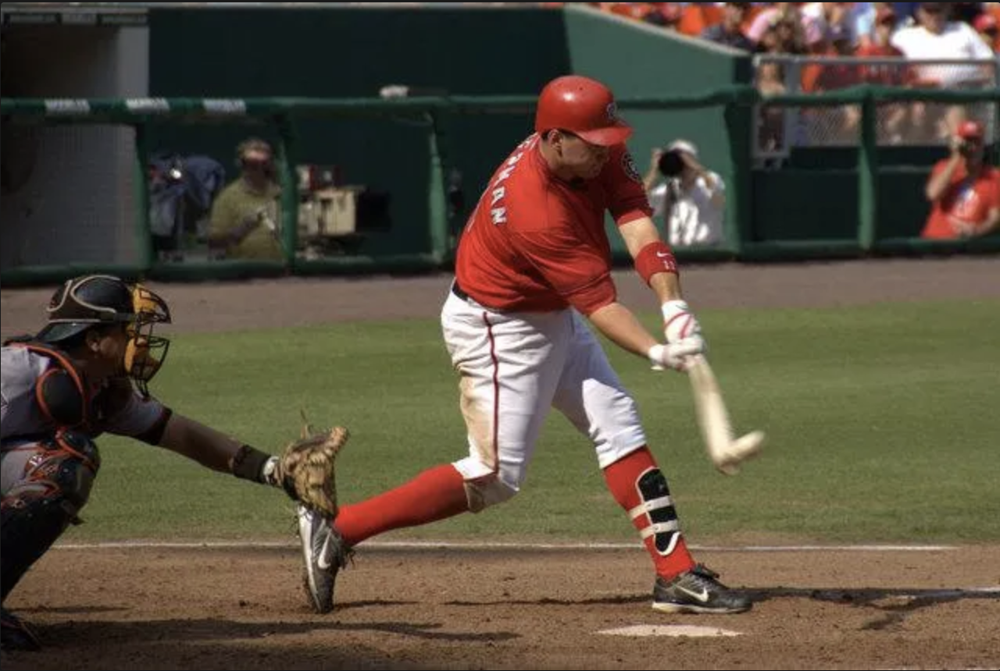
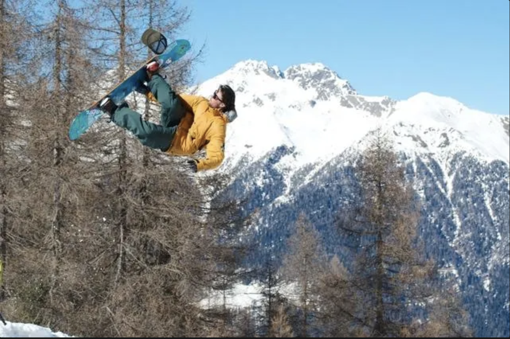
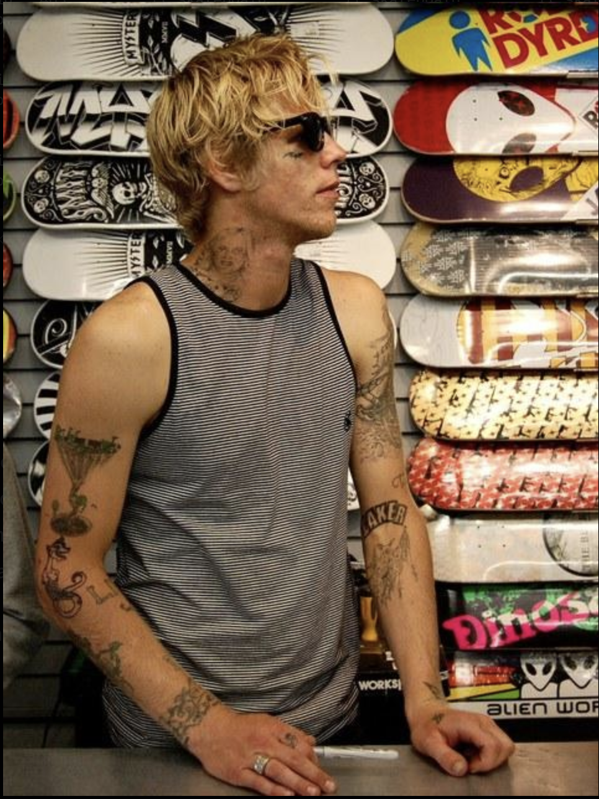
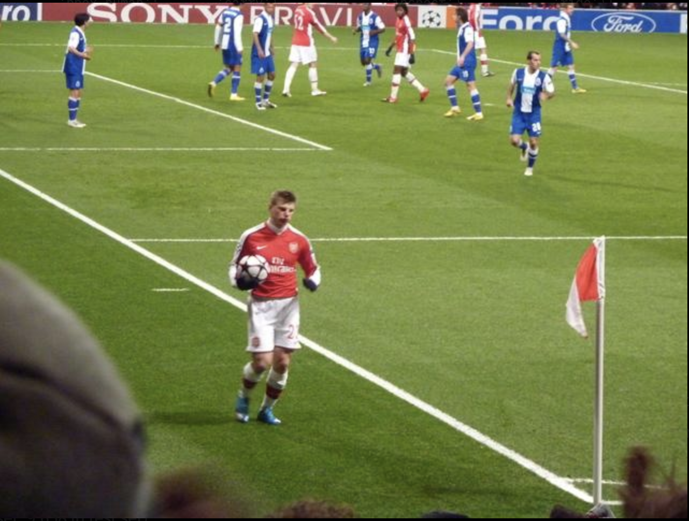

| Image |
Ground Truth |
Gemini 2.5 Flash |
Claude 4.5 |
|

|
[('baseball_bat', 'hold'),
('baseball_bat', 'swing'),
('baseball_bat', 'wield')]
|
Batter (Person in Red Uniform)
("bat", "swinging"),
("helmet", "wearing"),
("glove (on hands)", "wearing"),
("leg guard", "wearing"),
("dirt/ground", "standing on"),
("uniform (shirt/pants)", "wearing"),
("shoes", "wearing")
Catcher (Person in Black/Gray Uniform)
("mitt/glove", "holding"),
("mask/helmet", "wearing"),
("chest protector", "wearing"),
("shin guards", "wearing"),
("dirt/ground", "kneeling/crouching on"),
("shoes", "wearing")
|
Batter (center, in red uniform):
("baseball bat", "swinging"),
("helmet", "wearing"),
("jersey", "wearing"),
("pants", "wearing"),
("batting gloves", "wearing"),
("cleats", "wearing"),
("socks", "wearing"),
("ground", "standing on"),
Catcher (left, crouching):
("catcher's mask", "wearing"),
("catcher's mitt", "wearing"),
("chest protector", "wearing"),
("shin guards", "wearing"),
("ground", "crouching on")
People in dugout (background):
("dugout", "standing in"),
("uniforms", "wearing")
Spectators (background right):
("stands", "sitting in")
|
|

|
[('snowboard', 'hold'),
('snowboard', 'jump'),
('snowboard', 'ride'),
('snowboard', 'stand_on'),
('snowboard', 'wear')]
|
("snowboard", "riding/attached to"),
("bindings", "attached to"),
("boots", "wearing"),
("jacket", "wearing"),
("pants", "wearing"),
("goggles/sunglasses", "wearing"),
("air", "flying in")
|
("snowboard", "riding"),
("snowboard", "gripping"),
("jacket", "wearing"),
("snow pants", "wearing"),
("helmet", "wearing"),
("goggles", "wearing"),
("gloves", "wearing"),
("boots", "wearing"),
("air", "jumping through")
|
|

|
[('skateboard', 'no_interaction')]
|
("sunglasses", "wearing"),
("ring", "wearing"),
("counter/surface", "resting hand on"),
("skateboard decks", "standing in front of"),
("tank top", "wearing"),
("pen/small object", "holding/touching")
|
("sunglasses", "wearing"),
("tank top", "wearing"),
("ring", "wearing"),
("counter", "leaning on"),
("skateboard wall display", "standing in front of")
|
|

|
[('sports_ball', 'carry'),
('sports_ball', 'hold')]
|
main person in the red and white uniform:
("soccer ball", "holding"),
("grass/field", "running/standing on"),
("uniform/kit", "wearing"),
("boots (cleats)", "wearing"),
("flagpole", "running near")
players in the background:
("grass/field", "running/standing on"),
("soccer ball", "kicking/running near (implied)"),
("uniforms/kits", "wearing")
|
Player in red/white (foreground):
("soccer ball", "holding"),
("jersey", "wearing"),
("shorts", "wearing"),
("soccer cleats", "wearing"),
("field", "walking on")
Players in blue/white (background):
("jerseys", "wearing"),
("shorts", "wearing"),
("soccer cleats", "wearing"),
("field", "walking on")
Players in red/white (background):
("jerseys", "wearing"),
("shorts", "wearing"),
("soccer cleats", "wearing"),
("field", "walking on")
|
|
|
[('boat', 'ride'),
('boat', 'sail'),
('boat', 'stand_on')]
|
Boat in the Foreground (Right)
("boat/dhow", "sailing on"),
("sail", "operating/managing"),
("water", "floating on")
Boat in the Background (Left)
("boat/dhow", "sailing on"),
("sail", "operating/managing"),
("water", "floating on")
|
People on right sailboat (foreground):
("sailboat", "sailing"),
("sailboat", "sitting in"),
("sail", "operating"),
("rudder", "steering")
People on left sailboat (background):
("sailboat", "sailing"),
("sailboat", "sitting in"),
("sail", "operating"),
("rudder", "steering")
|
|
|
[('airplane', 'no_interaction')]
|
The image shows several parked airliners
and there are no people visibly
interacting with the physical objects in
the immediate foreground or midground.
Therefore, I cannot list any human-object
interactions in the format you requested
based on this specific picture.
|
Person near building (bottom right):
("tarmac", "standing on"),
("clothing", "wearing")
Note: The people in this
image are quite small and distant,
making it difficult to identify
specific detailed interactions
beyond basic presence and standing
on the ground surface.
|
For this project, wanted to use to use two Vision Language Models (VLM) that are considered strong but are recognized for different aspects.
Google Gemini 2.5 Flash is known for excelling in multimodal tasks while Claude 4.5 is recognized for its structured and reliable responses, especially in technical contexts.
From the results, they are generally good at human object interaction detection (HoI) with one minor incorrect response by Claude.
I was surprised at how many HoI's were found by both compared to the ground truth, but didn't find all the listed ground truths. This leads me to wonder if the ground truths should be expanded or updated.
The matching HoI's to the ground truth are in red. There was one incorrect finding in the Airplane image by Claude, it detected a human in the lower right corner.
There is an object, just not a human. It was possibly due to how small the object is and it being near the shack.
I want to use you as an HOI (human-object interaction). For the main person in the image, list what interactions the person is doing with physical objects.
Use the format ("object", "interaction"). Make sure to keep the format brackets and order "object" -> "interaction". If there is no clear interaction: output (no_interaction).
| Image |
Ground Truth |
Gemini 2.5 Flash |
Claude 4.5 |
|
|
[('baseball_bat', 'hold'),
('baseball_bat', 'swing'),
('baseball_bat', 'wield')]
|
main person
(the batter in the red uniform):
("bat", "swinging"),
("helmet", "wearing"),
("glove (on hands)", "wearing"),
("leg guard", "wearing"),
("uniform (shirt)", "wearing"),
("uniform (pants)", "wearing"),
("shoes", "wearing"),
("dirt/ground", "standing on")
|
main person (the batter in red):
("bat", "holding"),
("bat", "swinging"),
("helmet", "wearing"),
("uniform", "wearing"),
("batting gloves", "wearing"),
("socks", "wearing"),
("cleats", "wearing")
|
|
|
[('sports_ball', 'carry'),
('sports_ball', 'hold')]
|
main person in the image
(player in the foreground wearing
the red and white uniform):
("soccer ball", "holding"),
("grass/field", "running/standing on"),
("uniform/kit", "wearing"),
("boots (cleats)", "wearing"),
("flagpole", "running near")
|
main person (the player in red with the ball):
("soccer ball", "holding"),
("soccer ball", "carrying"),
("jersey", "wearing"),
("shorts", "wearing"),
("socks", "wearing"),
("cleats", "wearing"),
("grass", "walking on")
|
|
|
[('airplane', 'no_interaction')]
|
(no_interaction)
|
(no_interaction)
|